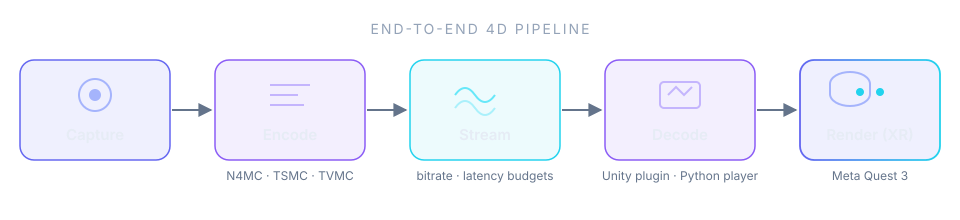
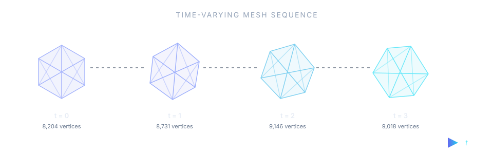
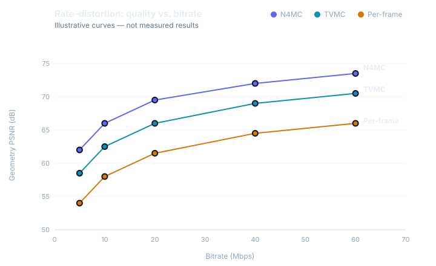
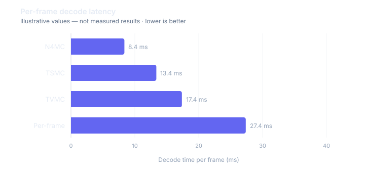

Have renders, demo videos, or results produced with Open4D? We would love to feature them here — get in touch or open a pull request against the repository.
Architecture diagrams, pipeline overviews, and evaluation-style plots from the Open4D platform. Charts marked illustrative show the shape of Open4D evaluations, not measured results — real benchmark numbers live on the Benchmarks page as they are published.




Have renders, demo videos, or results produced with Open4D? We would love to feature them here — get in touch or open a pull request against the repository.